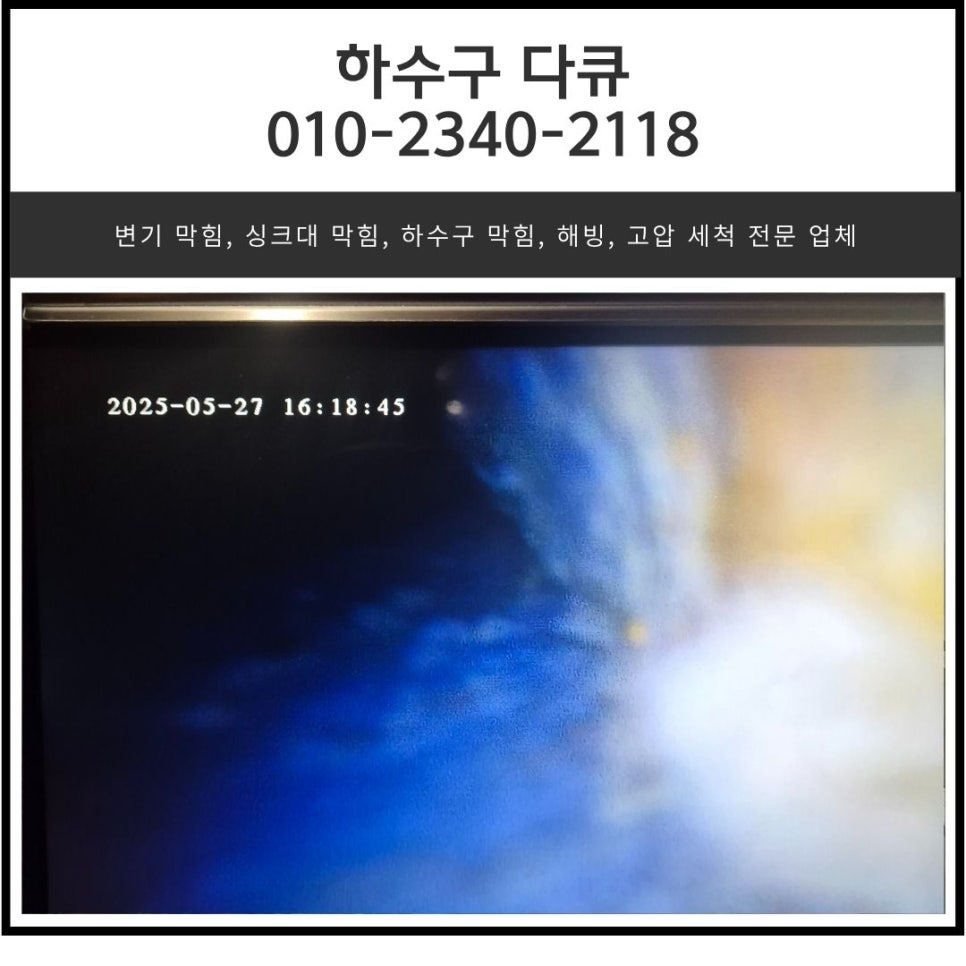
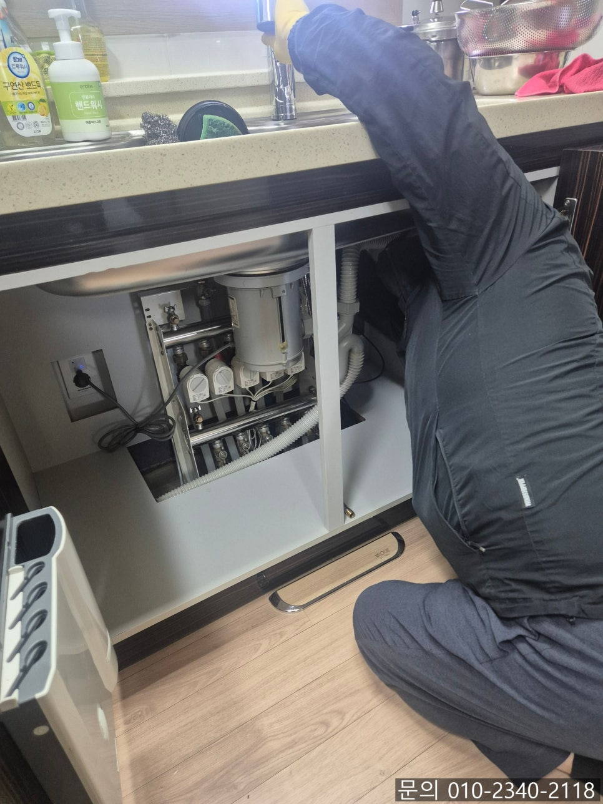
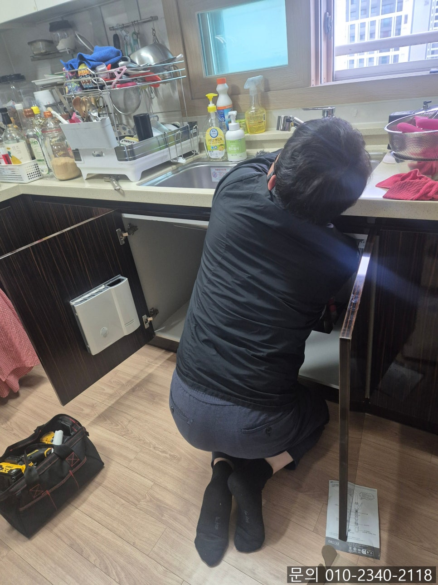
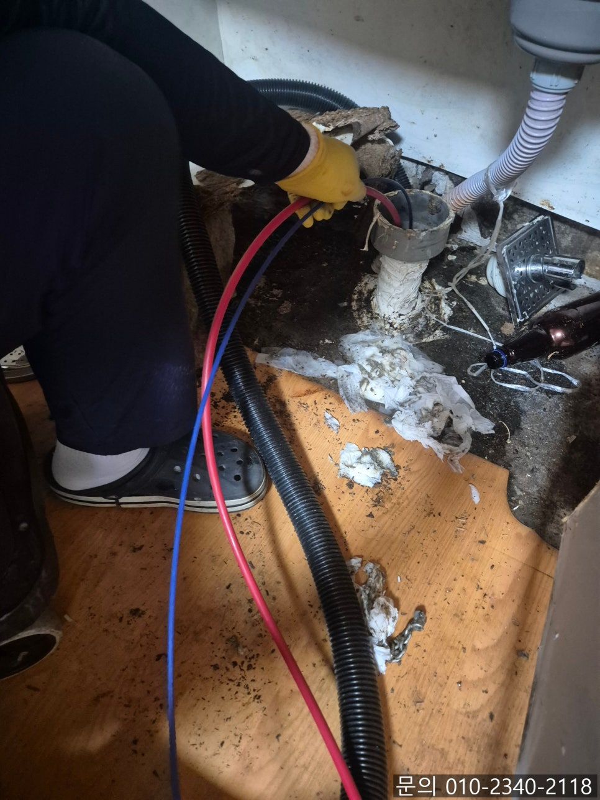
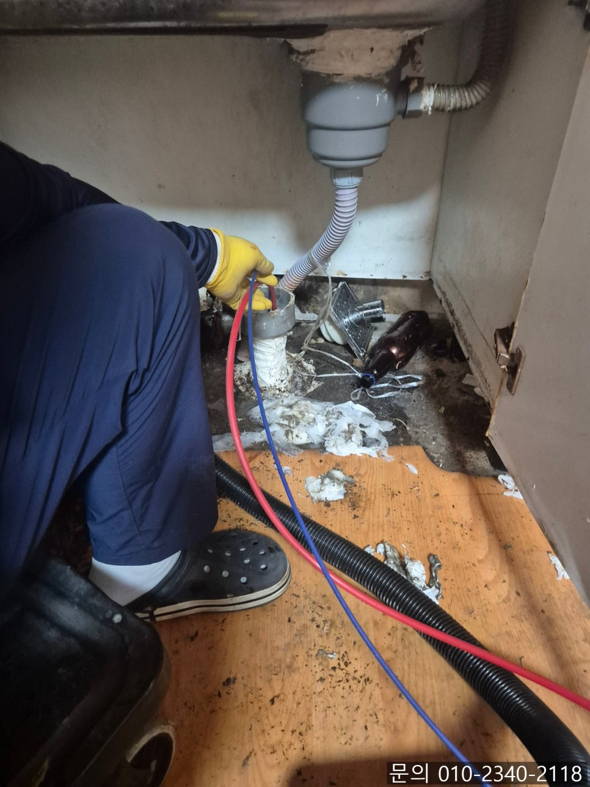
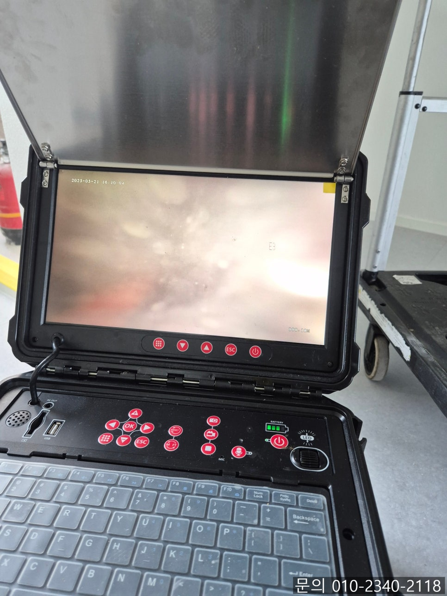
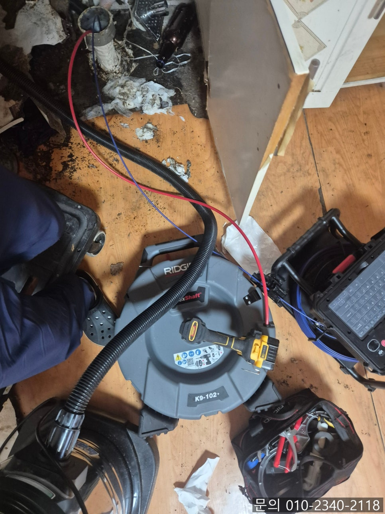

🏠 구운동 싱크대 막힘 수원 권선구 입북동 하수구 막혔을 때 뚫어주는 설비 업체
수원 싱크대막힘 전문 시공 후기

📋 작업 개요
- 위치: 수원
- 서비스 유형: 싱크대막힘, 하수구막힘, 배관막힘, 뚫는업체
- 작업 일시: 2025. 5. 29. 20:06
- 업체명: 하수구수사대 (010-5615-2118)
🔍 문제 상황
안녕하세요.
구운동 싱크대 막힘, 수원 권선구 입북동 하수구 막혔을 때 뚫어주는 설비 업체 하수구 다큐입니다.
한 아파트에서 싱크대 배수구 막혔다며 구운동 싱크대 막힘 전문 업체 하수구 다큐로 방문 요청을 하셨습니다.
구운동 싱크대 막힘이 발생하게 되면 음식 재료를 다듬거나 식기를 닦으면서 사용하게 되는 물이 넘치게 되면서 일상생활이 불편해질 수밖에 없어요.

🔎 원인 분석
💡 전문가 진단: 정밀 진단 장비를 사용하여 슬러지의 고착 여부를 판명하고 타격/세척 작업을 실시했습니다.
싱크대 막힘의 경우 원인에 따라 해결하는 장비와 방법이 다르기 때문에 정확한 원인을 파악하는 것이 중요합니다.
이번 현장에서도 하수구 막힘이 일어난 원인은 무엇인지, 이물질이 쌓인 부분은 어디인지 전문적인 장비를 이용해 꼼꼼하게 점검해 보기로 했어요.
우선 싱크대 하부장을 열어 배수관을 확인하면서 석션 장비를 이용해 배관 초입에 쌓인 이물질을 제거하는 작업을 시도했습니다.
간혹 막힘의 정도가 심하지 않은 경우에는 석션을 사용해 이물질을 빨아들여주는 것만으로도 문제가 해결이 되는 경우가 있는데요.
이번 현장의 경우 석션 장비로 배관 초입을 막고 있는 이물질을 제거해 봐도 싱크대에서 흘려보낸 물이 여전히 느리게 내려가고 있었습니다.

🔧 작업 과정
이런 경우는 대부분 배관 깊숙한 부분에 쌓인 이물질로 인해 막혔을 가능성이 크다 보니 배관 전용 내시경 카메라를 이용해 정확한 위치를 파악해 보기로 했어요.
사진으로는 정확하게 확인되지 않지만 많은 양의 기름 슬러지와 음식물 찌꺼기 등 이물질이 배관에 쌓여잇는 상태였습니다.
수원 권선구 입북동 하수구 막혔을 때 뚫어주는 설비 업체 하수구 다큐는 고객님께 막힘의 원인과 뚫는 방법 등을 설명해 드린 다음 막힘의 원인을 제거하는 작업을 진행했는데요.
수원 권선구 입북동 하수구 막혔을 때 뚫어주는 설비 업체 하수구 다큐는 내시경 카메라와 플렉스 샤프트, 석션을 사용해 작업을 진행했습니다.
내시경 카메라를 이용해 배관 속에서 굳어 단단해져 있는 기름 슬러지의 위치를 파악하고, 플렉스 샤프트 장비를 이용해 기름 슬러지를 타격해 잘게 부서진 다음 석션을 이용해 빨아들여 완벽하게 배관에서 제거해 주었습니다.
몇 차례의 작업만으로도 기름 슬러지들이 제거되면서 배관의 형태가 드러나고 고여있던 물도 시원하게 빠져나갔습니다.
하지만 아직 잔여 이물질이 남아있는 게 확인되어 계속해서 작업을 진행했어요.
계속해서 작업을 진행하자 기름 슬러지가 모두 제거되고 깨끗해진 배관 내부를 확인할 수 있었습니다.


✅ 작업 완료
마지막으로 싱크대에서 많은 양의 물을 흘려보내면서 배관 내부에 다른 문제는 없는지 꼼꼼하게 테스트까지 진행해 드리고 작업을 마무리할 수 있었습니다.
경기도 수원시 권선구 곡선로49번길 5-14 1층 101호




⚠️ 주방 싱크대 배관 막힘 예방 수칙
- ✅ 기름기가 묻은 식기나 프라이팬은 설거지 전 키친타올로 반드시 기름때를 닦아내세요.
- ✅ 주기적으로 싱크대 개수대에 뜨거운 물을 가득 받아 한 번에 내려 배관 내부 기름을 씻어내세요.
- ✅ 배수구 거름망을 미세한 필터로 사용하시고 음식물 찌꺼기가 틈으로 새어 들지 않게 관리하세요.
- ✅ 베이킹소다와 식초를 뜨거운 물과 함께 일주일에 한 번씩 부어주면 배관 살균과 막힘 예방에 좋습니다.
💡 핵심 정리
- 확실한 장비 작업(내시경 점검 및 샤프트 스케일링)으로 원인을 뿌리 뽑습니다.
- 작업 후 1년 이내에 동일한 부위 재발 시 100% 무상 A/S 서비스를 보장합니다.
- 서울 · 경기 · 인천 전 지역에 24시간 언제든 긴급 출동할 수 있도록 항시 대기 중입니다.
❓ 자주 묻는 질문 (FAQ)
🚨 수원 싱크대막힘 문제로 고민이신가요?
정확한 원인 진단과 확실한 시공으로 재발 없는 해결을 약속드립니다.
24시간 긴급 출동 | 서울 · 경기 · 인천 전지역 | 1년 내 재발 시 무상 A/S